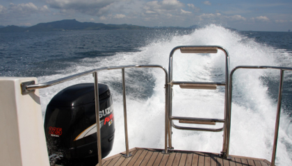
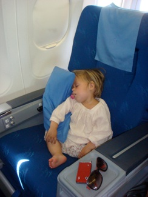

Fra Thailand til Australien - En gyserhistorie !

Med 450 Hestekræfter og hjertet oppe i halsen på vej væk fra Krabi
lørdag den 17. november 2007

Jeg blev ramt af en god gang hybris igår. Efter at have skrevet at vi var sluppet for uheld, ja så skulle det jo næsten gå galt ...
Vores transport væk fra Krabi var arrangeret hjemmefra. Vi skulle flyve videre fra Phuket Airport, hvilket betød en 4 timers køretur i bil. Herefter skulle vi vente 3 timer i Singapore, flyve i 7 timer til Brisbane, vente yderligere 3 timer og skifte fra international til domestic med al vore bagage og ingen trolleys til og fra toget mellem de to lufthavne, for så endelig at flyve 2 timer til den lille by Townsville. Det var derfor meget fristende da hotellet i Krabi foreslog os at booke en vandflyver til Phuket, for på den måde blev en 4 timers køretur forvandlet til 12 minutter i vandflyver (tiden viste sig senere kun at være flyvetiden til PhiPhi), hvilket kunne spare os for den lange tid i bilen med ungerne, og vi ville samtidig få en spændende og smuk oplevelse med vandflyveren - lidt for spændende skulle det senere vise sig...... Så selv om det var pebret i pris sagde vi ja til den gode idé.
Men så let skulle det bare ikke gå. For kommunikationen på hotellet mellem medarbejderne var ikke god. Brevet om vores accept af vandflyveren nåede derfor ikke frem til rette person, og da den endelig gjorde var prisen på flyet til gengæld steget. Vi accepterede alligevel, men så blev tidspunktet pludselig ændret fra 12.30 til 10.30 med mellemlandinger, og så gik noget af fidusen ligesom af. Det lykkedes dog hotellet på afrejsedagen at få ændret tidspunktet igen, men nu til kl. 13, og da vi skulle være i lufthavnen senest 13.55, begyndte vi at blive godt nervøse. Men meldingen fra hotellet var klar: I skal bare slappe af, der er styr på det og masser af tid.
Da jeg tjekker ud kl. 11 går det op for mig, at der stadig ikke rigtig er nogen af medarbejderne, der kender til vores specielle transport. Og da vi - mens vi spiser frokost på stranden - tilfældigvis ser, at vores bagage er ved at blive lastet på en båd ind til Ao Nang, melder panikken sig. Det lykkes at få stoppet bagagen i sidste øjeblik, men på vej tilbage til frokosten får jeg pludselig en fax stukket i hånden af en tilfældig medarbejder, hvor der står, at vi vil være fremme i Phuket lufthavn kl. 14.40. Det dur selvfølgelig ikke, når vi skal videre kl. 14.55. Den medarbejder der har stået for hele projektet er væk, og da jeg ringer direkte til flyselskabet, får jeg at vide på gebrokken engelsk, at de ikke kan flyve alligevel, men at de kan hente os kl. 14. På det tidspunkt er klokken 12.30 og vi kan altså ikke nå til lufthavnen med bil, så nu er vi for alvor problemer - især fordi vi har 3 connecting flights og 2 små børn.
Panik panik! Ingen kan rigtig finde en løsning, men da vi på vores dykkertur har fået at vide, at det tager 1 time at sejle til Phuket, lykkedes det at overtale hotellet til hurtigst muligt at loade al bagage ombord på deres største motorbåd og sejle os derover. Det tror jeg aldrig de har prøvet før, for det er med søkort, full throttle på de to 225 hestes motorer, og hjertet oppe i halsen at vi kommer afsted.
Det tager selvfølgelig væsentlig længere tid at sejle dertil, end vi havde fået at vide, og samtidig skulle vi så med taxi til lufthavnen fra Phuket Marina - en tur der skulle tage 10 min. Det lykkes at arrangere to taxier, som står klar i havnen, vi får kontaktet flyselskabet, og får skudt vores indcheckning til 14.30 senest. Men da vi lægger til i havnen kl. 14.10 og skal have børn og bagage fragtet af en flere hundrede meter lang bådebro, begynder vi virkelig at tvivle.
Vi vælger dog at tage chancen og tage spurten ind ad bådebroen. Fuldstændig gennemblødte af sved, får vi mast tingene ind i taxien, og afsted går det. Men da taxichaufføren på gebrokkent engelsk forklarer at det tager 20 minutter i taxi, forsvinder håbet næsten helt. Han finder dog en smutvej, og vi ankommer til lufthavnen et par minutter over halv to - 20 minutter før flyet skal afsted. Vi har aftalt, at jeg bare skal storme ind og finde skranken, mens Camilla ordner al bagage, betaling af de to taxier og to trætte børn! Da jeg endelig kommer igennem køen ind til indcheckning (al bagage scannes ved indgangen i denne lufthavn), ser jeg damen fra Silk Air slukke lyset over skranken og gå væk. men i en spurt får jeg fanget hende og forklaret at de sidste 4 passagerer er klar.
Til vores held havde vi booket Business Class, hvilket altså giver lidt mere fleksibilitet, så hun løber tilbage - genåbner skranken, får kaldt 4 personer til, der dels skal hjælpe Camilla og pigerne ind, hjælpe os gennem immigration, paskontrol, bagage scanning og ud til flyet som havde lukket for boarding!

Den resterende del af rejsen frem til Townsville går fint. Det er en meget lang tur, men vi må konstatere at det er nogle tapre småpiger vi har med på rejsen, for der er ingen ballade overhovedet. De spiser, sover, griner og pjatter - også når forældrene ser skæve ud i ansigtet af rejsestress!
Det var vores held at hotellet rådede over en så hurtig båd. Ellers kunne vi ganske enkelt ikke have nået vores fly!
En utrolig flot sejltur, som vi dog ikke rigtig kunne nyde, da vi selvfølgelig spekulerede på om vi kunne nå frem i tide og hvad vi skulle gøre hvis det glippede
En træt Stella går kold få minutter efter at vi sidder i flyet til Singapore. Camilla og jeg drikker nogle meget stærke GT´ere!